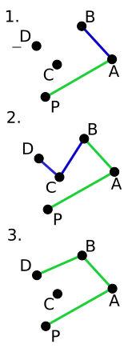

CS2 Assignment 2: Sorting and Convex Hull
Due Tuesday, January 16, 2018, at 17:00 PST
Assignment (20 points)
When you are finished with this assignment, please archive the assignment folder in an archive file named USERNAME-cs2-week2.tar.gz or USERNAME-cs2-week2.zip, and upload it to Moodle. For this week's assignment, you will need some graphics libraries that the convex hull GUI program uses to render its graphics.
Prerequisites
If you are working with the virtual machine that we provided, the dependencies are already installed.
- g++ 4.6.x+
- valgrind
- libsdl1.2-dev
- libsdl-gfx1.2-dev
On an Ubuntu distribution, to install these packages, you should run the following commands in a terminal.
$ sudo apt-get install valgrind $ sudo apt-get install libsdl1.2-dev $ sudo apt-get install libsdl-gfx1.2-dev
Ask a TA if you need help retrieving these packages, or if these packages appear to be missing from the CS cluster. Detailed instructions will soon be posted for students using VirtualBox or Ubuntu.
For those students using Arch Linux or a derivation thereof (that uses pacman as the system's package manager), you can install the necessary dependencies as follows:
$ sudo pacman -S sdl $ sudo pacman -S sdl_gfx
Part -1: Warmup Question
Warmup Question: Write a function which determines whether or not there is a loop in a singly linked list. A loop is defined as a node that points to some previous node as its "next", therefore creating a loop in the list. You may use the implementation of the linked list from Part 1 (after you have fixed it!) to test your function.
Note: This week's question is kind of difficult! The "warm up" question is always a bonus point, so if you're struggling with it, finish the rest of the set first.
Part 1: Memory Leaks, and why they are bad for you.
New Tools: valgrind
Recall the concept of dynamic memory allocation from last week. We mentioned that the programmer must manually manage heap memory, where dynamically allocated memory resides. This week we will explore what happens if a programmer is not careful about managing the memory he or she allocates.
Valgrind is a program used for memory debugging and memory leak detection that runs your program and keeps track of its memory usage. Your program runs normally within Valgrind, and when it returns, Valgrind prints out a useful report of the heap memory usage of your program.
Take a look at the file linked_list.cpp. This file implements the shell of a linked list data structure. Compile it with the command make list. Now run the program in Valgrind with the command valgrind ./linked_list and inspect the output. If Valgrind reports that a nonzero number of bytes are "definitely lost," "indirectly lost," or "possibly lost," then you are almost certainly leaking memory. (On the other hand, it is fine to have more "allocs" than "frees," and to have a nonzero number of bytes that are "still reachable.")
Part 2: Sorting
New Concepts: argc/argv, File Input, C++ Standard Template Library
One of the most useful ways to use a program is to pass it input and receive some output. For example, if I have a program that determines whether a number is prime that gets its input from the user via scanf or cin, and I want to count the number of prime numbers in a file, I don't want to enter each number in the file by hand and keep track of the number of primes I have by myself. Wouldn't it be nice if I could pass the contents of my file to my program?
Here's where argc and argv come in. Check out the demo file argcv.cpp. Compile it and run it:
$ g++ argcv.cpp -o argcv ./argcv foo bar baz
What was the output? You should notice that argc is the number of arguments in the command line invocation of our program and argv is an array of strings; precisely the strings in our invocation. Notice that the program name itself is the always the first argument in argv.
Now let's do a simple file input exercise using what we just learned. We will write a program that takes a filename as its command line argument and prints the contents of that file to stdout, in the process learning about the vector container implemented in the C++ Standard Template Library, which we will refer to as STL from here on out.
The STL is a collection of container classes and algorithms that provides many of the basic data structures and algorithms commonly used in programs. We will be using it more later in the term; this week we will concern ourselves only with the vector container from STL. The vector container is documented in detail here; for this week's purposes, it is a more convenient form of an array. Notice that vector, like most STL container classes, uses templates. This means that a vector can contain any type of primitive or object, unlike conventional C arrays. The link above provides many examples of vector usage; if you get stuck or confused about how vectors work, take a look at the examples provided in the documentation.
Here is an example that may be particularly useful this week:
// Fill vector with numbers
vector<int> nums;
for (int i = 0; i < 10; i++)
{
nums.push_back(i);
}
// Print out the contents of nums with an iterator
for (std::vector<int>::iterator i = nums.start(); i != nums.end(); ++i)
{
std::cout << (*i) << std::endl;
}
// Print out the contents of nums treating it like an array
for (int i = 0; i < nums.size(); i++)
{
std::cout << nums[i] << std::endl;
}
$ make fileio $ ./testFileIO nums 1 2 3 4 9001 42 24
We will use what we've learned so far to write a program that takes a file input and an optional command line argument specifying which type of sort we want to use. The program will then sort the numbers in the input file and print out its result. The command line parsing has been done for you so you can focus on writing the sorting algorithms. You must have a working readFile function before the program in the next part will work.
New Concepts: The Bubble Sort, Quicksort, and Merge Sort Algorithms
In lecture this week we covered the bubble sort algorithm. Before we implement it in code, it is important to know precisely what it is we're doing. We will outline the bubble sort algorithm in step-wise English before writing a single line of code. You may find it useful to pass arguments by reference in a helper function that swaps two elements of a vector/array. Take a look at this tutorial on passing arguments by reference for an explanation and examples of this.
Here is an example of outlining an algorithm for finding an element in an array using the binary search algorithm. Notice that the function for computing the midpoint is not explicitly written out, as its implementation is fairly trivial. You may want to consider doing this for a function that swaps data elements in your sorting algorithms.
/**
* @file search.cpp
* @author The CS2 TA Team <cs2-c-tas@caltech.edu>
* @date 2017
* @copyright This code is in the public domain.
*
* @brief An example of code outlining, using the binary search algorithm.
*/
/**
* The range [low, high] are the indices where we expect to find value in the
* array. The function returns the index of value if it is found in array, and
* NOT_FOUND if value is not in the specified range in array. If multiple copies
* of value are in array, the function returns the index of an arbitrary one.
*
* IF low > high THEN
* RETURN NOT_FOUND
* ELSE
* mid = midpoint(low, high)
* IF array[mid] > value THEN
* return binarySearch(array, value, low, mid - 1)
* ELSE IF array[mid] < value THEN
* return binarySearch(array, value, mid + 1, high)
* ELSE
* return mid
* ENDIF
* ENDIF
*
*/
int binarySearch(int array[], int value, int low, int high)
{
// code goes here...
}
The quicksort algorithm we've implemented is good, but not ideal. It constructs extra lists every function call. On large input, this can cost a lot of memory overhead. We can retain the nlog(n) time compexity of the quicksort algorithm and reduce its space complexity to O(1) by implementing it in-place.
An idea for implementing the quicksort algorithm in place is to keep track of the segment of the list we are sorting with its leftmost and rightmost indices. We may select a pivot in the list and partition the list around this pivot using a helper function. This helper function should put all elements smaller than the pivot element on its left and all elements larger than the pivot on its right. It may be useful to return the index that the pivot point ends up at from your helper function.
Try not to use operations that increase the time complexity of any of your sorting functions. For example, the std::vector::insert() function takes time that is linear in the size of the vector, so you probably want to avoid it.
Once you've finished implementing any subset of the above algorithms (or even before), you can compile your program and test it. Specify the type of sort you want to use with a command line option as documented in the usage statement that sorter prints out if you try to run it alone.
$ make sorter
$ ./sorter
Usage: sorter [-b] [-m] [-q] [-qi] FILE
Sorts a file that contains integers delimited by newlines and prints the result to stdout.
-b bubble sort
-m merge sort
-q quick sort
-qi in-place quick sort
No option defaults to bubble sort.
$ ./sorter -q nums
1
2
3
4
24
42
9001
We've also included some test files for you to test your sorter program on. These are labeled testsort followed by a number. Feel free to make your own test files and include them with your submission to demonstrate your program's robustness.
Part 3: Convex Hull Algorithms
New Concepts: Arrays of Pointers
In the sorting algorithms, we dealt with vectors that held integer primitives. The STL vector implementation is done with templates, which allows vectors to hold virtually any type of data. We can use this to store objects and structs within vectors. This week, we will work with vectors that hold pointers to structs in order to practice using pointers.
Take a look at the angleSort.cpp file. You'll see that its main method initializes two vectors, one that contains doubles and the other that contains pointers to tuples. For this exercise we will pretend that the doubles represent the angles each point makes relative to the x axis. That is, the angle formed by the positive x axis and the line joining the point to the origin.
$ g++ -std=c++0x angleSort.cpp -o angleSort $ ./angleSort (0, 0) (1, 1) (2, 2) (3, 3) (4, 4) 4.2 2.8 1.4 5 3.3 (2, 2) (1, 1) (4, 4) (0, 0) (3, 3) 1.4 2.8 3.3 4.2 5
Congratulations, you've just written part of the code for the Graham scan algorithm, which we will implement later.
New Concepts: Gift Wrapping Algorithm
We've provided a GUI for you to visualize the convex hull algorithms you'll be implementing this week. The only file you have to edit is HullAlgorithms.cpp. The functions you'll have to implement this week are DoGiftWrap and DoGrahamScan, both of which take two arguments. The first is a vector of pointers to tuples, which you worked with while sorting angles, and the second is a pointer to the convex hull application. The function from the application you'll be concerned with is add_to_hull, which is called with a pointer to a tuple as an argument. An example of adding a point to the hull:
app->add_to_hull(new Tuple(1, 1)); // The -> symbol used above is syntactic sugar for a pointer dereference. The // same result is achieved with: (*app).add_to_hull(new Tuple(1, 1));
The gift wrapping algorithm is an output sensitive convex hull algorithm, meaning its runtime depends on how many points are in the convex hull as well as how many points are in the data set to begin with. The general idea is:
- Find a point known to be on the convex hull, for instance, the leftmost point in the data set.
- Add this point to the convex hull, then find the point such that no points lie on the right of the line connecting our first point and this point. Either do some vector arithmetic to figure out whether a third point lies on the right of a line determined by two points or look up how to do this online. You will want to use a loop in this step, probably looping all of the points in the data set.
- Use the point we just found as our new starting point and loop doing the above procedure until we wrap all the way back around to where we started.
A helper function to determine whether three points make a left turn is very useful for this assignment! This function can be used in both the gift wrapping and Graham scan algorithms. The reference implementation for gift wrapping contains only 17 lines of code, not including comments and helper functions. One helper function determines whether three points make a left turn and the other returns the leftmost point in the data set. Both of these are fairly easy to implement and make the gift wrapping function much more readable.
You should also note that the screen is oriented such that the positive y axis goes from the top towards the bottom of the screen. This means that any three points that would constitute a left turn in our normal, Cartesian coordinate system actually constitute a right turn in our GUI window. Don't fear! There is an easy way to account for this. You can implement the function that determines whether three points make a left turn in such a way that it respects the GUI's coordinate system, and implement the gift wrapping algorithm as if your points were in a Cartesian coordinate system.
New Concepts: Graham Scan Algorithm
The Graham scan algorithm is a convex hull algorithm that runs in nlog(n) time where n is the number of vertices in the data set. This algorithm is preferable to the gift wrapping algorithm whenever you expect the convex hull to contain more vertices than log(n) [almost always]. Here is a brief overview of how it works (think in Cartesian coordinates):
- Find the lowest point in the set of points. Designate this point P. We know that P will be in the convex hull.
- Sort the points either with respect to the angle formed by the origin, P, and each point, or with respect to the angle formed by the horizontal line crossing P and the line joining P and each point. We now know three points on the convex hull: P, at the front of the sorted array, the point after it, and the last point in the array.
- Now consider points in the sorted array in sequence. Specifically, keep track of points that are on the hull in sorted order. Add the next point to the convex hull and make sure that the last three points on our hull make a left turn.
- Continue until we get back to our starting point.

We see our first right turn in step 2. This indicates that C cannot be on the convex hull. We drop the second of the last three points in the convex hull until the last three points make a left turn.
{kind=link}
Our reference implementation uses about 13 lines to compute the hull, not including comments or helper functions. You should find helper functions to sort the points with respect to a single point (refer to the second bullet point above) and to check for three points making a left turn to be very useful. The code you wrote in angleSort.cpp should be reused here as well, perhaps encapsulated in your function that sorts the points with respect to P. Our implementation uses the modified in-place quicksort for angleSort and there is no difference between the sorting code in angleSort.cpp and HullAlgorithms.cpp.
Part 4: Further work
These are more time-consuming exercises. Complete them only if you have time.
This week's extra points exercise involves an algorithm from the early days of computer graphics. When you choose two points on a screen and ask any modern graphics library to draw a line between them, it does so. How does it do this?
New Concepts: Bresenham's Line Algorithm
Here is a more precise specification of the problem.
Let two points P and Q with integer coordinates be given. Call a sequence of points an integer path between P and Q if every point in this sequence has integer coordinates and each point is adjacent to the next. Two points (x, y) and (a, b) are said to be adjacent if and only if |x - a| and |y - b| do not exceed one.
Produce the shortest length integer path from P to Q, where the length is defined to be the sum of the distances of adjacent points in the sequence. The distance between points is the usual Euclidean distance in the plane.
One idea is to use Bresenham's line algorithm, which you can look up on Wikipedia or other sources. Do not plagiarize code.
We've provided you with a GUI application similar to the convex hull app that handles the visualization component of the line algorithm. Click on the screen to place points on it, and press l to invoke your line algorithm on the last two points you entered. You can also press c to clear the screen of all points and lines.
Note on SDL memory leaks
This assignment and many future assignments will use graphics libraries such as SDL. Valgrind will report that some of these libraries leak memory. You can use valgrind --leak-check=full ./ConvexHullApp to try to determine whether a memory leak is from your code or a library's code.